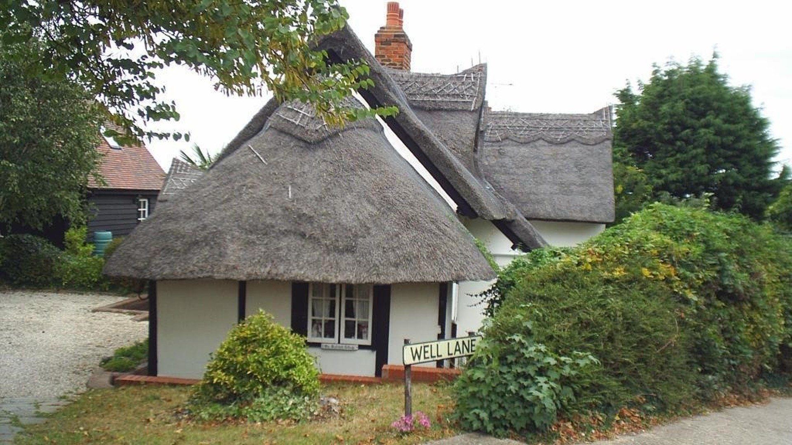

Click here to be directed to the North Stifford Village Community Group facebook page and then go to the Action Group chat

Click here to Sign the residents petition to stop the proposal for a new housing development in North Stifford Village

Click here to formally object to the new housing proposal 23/00853/FUL on the Thurrock Council Planning site and to review the documents.
Among their numbers are several protected species:
Other species that make their home here: